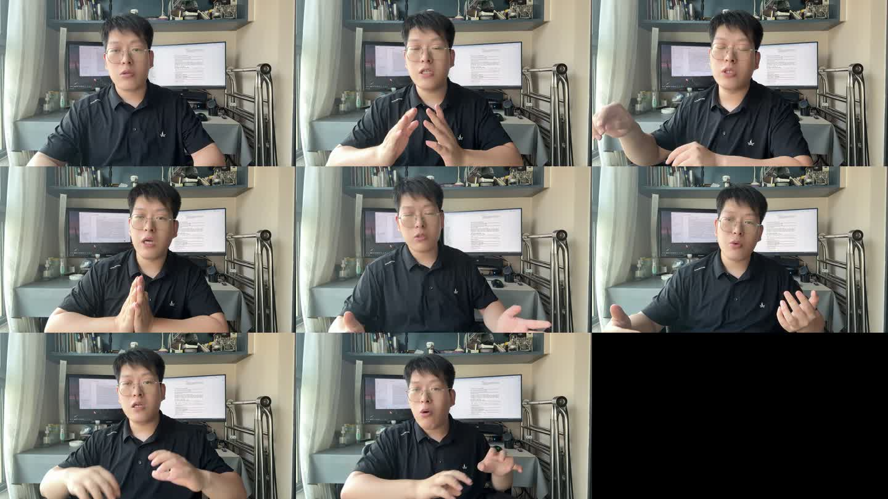
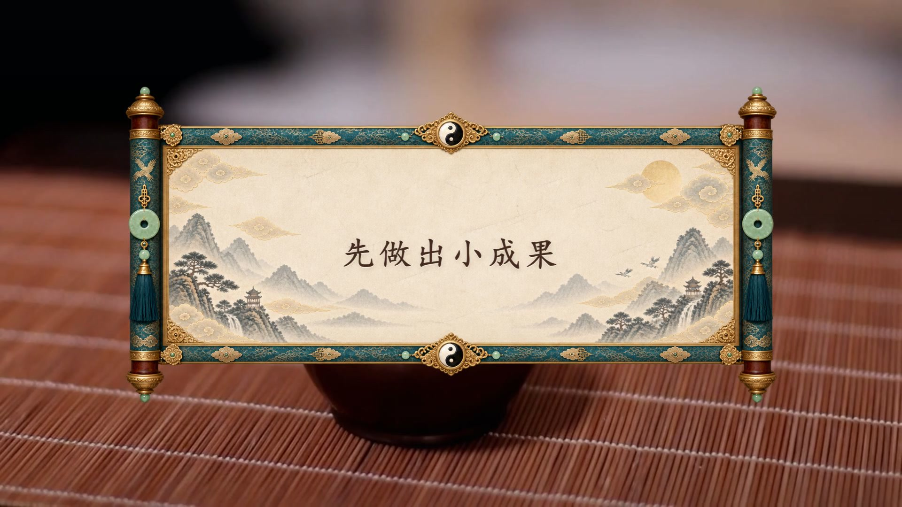
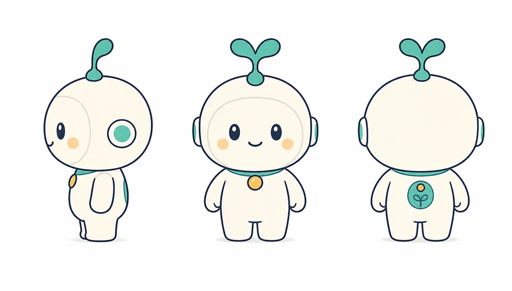

重装电脑之后，最容易产生一种错觉：软件重新装上了，工作就恢复了。实际上，真正需要恢复的是入口、上下文、项目状态和验证习惯。过去两天我没有急着把所有工具都装满，而是先把几个每天会用到的工作系统重新接上，再把 AI 视频制作里暴露出来的问题留下记录。
Local AI Entry
Pi Agent / Pi Web
本机入口重新可用 02Knowledge System
Obsidian 恢复
导航、总览与状态卡 03AI Video
剪辑问题复盘
预览、动效与节奏 04Verified Output
其他成果
环境盘点与成片验收Local AI Infrastructure
Pi Agent：我为什么觉得它更顺手
重装后重新接上的第一个日常入口，是 Pi Agent 的本机 Web 界面。它没有强迫我换一套工作方法，而是把现有项目、技能和命令重新接到一个可以直接对话的入口里。
本机入口
局部服务
与现有技能
真实任务
留下记录
这两天实际恢复了什么
- Pi 的本机运行目录、Node.js、PortableGit 和 Pi Web 入口已经重新接好。
- 桌面启动包装会先检查
http://127.0.0.1:30141/，服务不存在时再启动 Pi Web。 - 本机实测 Pi Web 返回 HTTP 200，页面标题为 “Pi Web”，日志也记录了本地服务已就绪。
为什么它适合现在的工作方式
Pi 的核心很小，但可以通过 skills、extensions、prompt templates 和项目上下文扩展。对我来说，真正有价值的不是“又多了一个 Agent”，而是它能把已有的技能、项目文件和验证规则放在同一个入口里。它更像一个可以继续长大的工作台，而不是一套必须从头学习的封闭流程。
当然，Agent 好用不等于任务天然正确。端口、配置、凭据、模型和输出文件仍然需要真实检查；以后遇到问题，先查服务是否活着，再查 Pi 配置和真实请求，最后看产物。
Knowledge System Recovery
Obsidian：恢复的核心不是找回文件，而是找回索引和状态
知识库恢复没有停在“文件还在不在”，而是先把项目导航、近期工作总览、状态字段、证据和下一动作重新整理出来。
MOC 入口
主线与优先级
active / review
文件与验证
不再从零猜
这次恢复真正留下的结构
- 项目导航：重新连接近期项目、项目状态卡和工作上下文。
- 2026 年 8 月近期工作总览：把道家运势视频、Pi Agent、AI 视频、知识库和其他工具放回同一张地图。
- H3 MV 项目状态卡：明确首版已经通过技术核验，但节奏、镜头数量和音乐仍处于 review，而不是假装最终完成。
- 状态字段统一成 active、verified、review、maintenance 等，事实、判断和下一步分开写。
一个必须说清楚的边界
目前本机能核实到的是 _obsidian_patch_20260824 里的恢复补丁：项目导航、项目总览和状态卡已经整理出来。但常见的 E:\Obsidian Vault 目录当前不在已检查位置，所以这一步应称为“恢复结构和补丁已落地”，还不能把它包装成完整 Vault 已经合并完成。
这反而提醒了我：知识库恢复不能只看“有没有生成 Markdown”。真正的完成定义应该是：能打开真实库、能从首页找到项目、能回到证据文件，并且下一次工作可以直接沿着状态继续。
知识库恢复的第一验收标准：不是笔记数量，而是下一次遇到同类任务时，能不能找到上一次已经验证过的判断。
AI Video Production
AI 视频制作：这两天最重要的不是多做成片，而是找出哪里会失真
最近的剪辑工作同时暴露了两类问题：工程状态可能和画面状态不一致，成片技术通过也不代表节奏和表达已经通过。
8 月 23 日口播视频：成片完成，但流程暴露了问题
- 真人口播作为主画面，叠加重点词动效、知识图示、案例卡片、模型对比和流程动画；连续字幕没有烧录，保留给最终人工添加和校对。
- 正式成片使用了修正版分段工程，但 Studio 预览入口还指向旧的总工程，因此出现“预览和正式版本不同步”。
- 第一版还遇到 CSS 初始状态与 GSAP 入口动画冲突，部分元素实际不可见；静态检查通过，也不能证明观众真的能看到画面。
- 长视频最后通过分段渲染解决了稳定性问题，但以后仍要先做 30—60 秒样片，确认背景、视觉密度和 B-roll 形态后再铺满全片。
8 月 24 日 H3 MV：技术成片通过，节奏还没有通过
这次从 14 张图片中筛出 8 张，完成参考图到视频的 R2V 生成。首版输出为 1344×768、约 15.08 秒的横版 MP4，文件读取和媒体参数都正常。
但首版仍然处于 review：没有正式参考音乐，镜头数量偏少，整体节奏偏慢。下一步不是覆盖首版，而是保留首版证据，先按音乐段落重新设计切点，再决定后期重剪还是重新调用 H3。


这两天真正沉淀下来的剪辑规则
不能修了分段工程，却继续打开旧的总工程验收。
结构检查、Studio 实时预览和实际 draft 样片要同时存在。
背景、卡片密度、B-roll 类型和遮挡范围要在制作前锁定。
视频能播放、没有黑屏和削波，只说明它可交付；节奏、镜头数量和表达还要单独判断。
Environment & Verified Output
其他支线：一部分已经通过，一部分还在等待条件
恢复期里也顺手盘点了知识 IP 样片环境和道家运势视频产线，避免把“环境存在”误认为“项目已经完成”。
已经验证的成果
道家国风运势视频 V4.3 的 8 月 25 日成片已经通过技术验证和画面抽检：6 段视频、33 段文字，时间线上没有间隙和重叠，最长黑屏为 0 秒，最终混音没有削波。这说明这条生产线已经从“搭出来”进入“可以稳定复用”的阶段。
知识 IP 样片目前还缺什么
- 新的 Qwen3 旁白凭据当前为空，不能直接生成新的旁白。
- Whisper 模型文件还没有落到本机，无法继续做短语级声学对齐。
- HyperFrames 版本存在 0.8.10 与 0.8.14 的差异，正式渲染前需要先固定版本。

这两天的总结果：重装系统之后，真正恢复的不是一台“装满软件”的电脑，而是一条从 Agent 入口、知识库上下文，到视频生产、真实验证和复盘回写的工作链。能通过的项目继续复用，没通过的项目明确写下缺口，下一次就不必从猜测开始。
接下来怎么继续
- 日常任务优先从 Pi Agent 入口进入，遇到问题先核端口、配置和真实请求。
- 确认真实 Obsidian Vault 路径后，把恢复补丁正式合并，并重新检查导航链接。
- AI 视频制作先做 30—60 秒样片，统一预览与正式渲染工程，再决定是否铺满全片。
- H3 MV 等用户确认音乐和节奏后再做 v2，不覆盖首版；道家运势视频继续按 V4.3 SOP 复用。